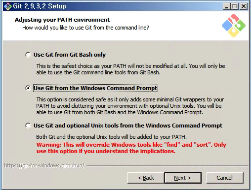
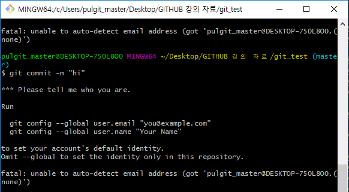
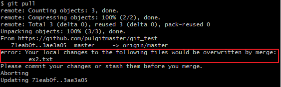

What is git ?
버전 관리 시스템(vcs)중 하나 이며, 가장 널리 사용 되고 있다. (리누스 토발즈 만세)
GIT에 대한 사전적 정의와 유례 정도는 여기로 들어가서 정독하는 것도 권장.
이 강의 노트를 보고 있는 여러분 중에선 자신의 모든 소스코드나 프로젝트를 웹 하드에서 관리 하는 습관을 가진 사람이 있을지 모른다.
본인은 몰랐겠지만 은연중에 버전관리를 하고 있었다!
대표적인 버전 관리 예 (a.k.a Web Hard)
- Google drive
- DropBox
- Naver cloud
- Microsoft Onedrive
Ok, 근데 git을 왜 배워야할까?
ex1 소프트웨어 엔지니어의 포트폴리오 작성 요령중...
가능하면 GitHub이나 BitBucket 같은 Git 호스팅 서비스에 올려두자.
요즘은 SVN이든 Git이든 VCS를 사용하지 않는 업체를 찾기 어려울 정도이다.
혹시 VCS를 전혀 사용하지 않는 개발 업체가 있다면, 입사를 다시 한번 고민해보라고 진지하게 말하고 싶다.
입사 지원자에게 GitHub 계정 링크를 알려달라는 곳이 해외는 물론 국내에도 꽤 있다.
가능하면 포트폴리오를 앞서 말한 두 서비스 중 하나를 택해서 올려두는 게 좋다.
개인적으로는 GitHub를 추천하는데, 사용자가 더 많아서 문제가 생겼을 때 도움을 구하기 쉽기 때문이다.
출처 : 우리가 Git을 알아야하는 이유1
ex2 구글 애플 개발자가 기여한 '프론트엔드 개발자 인터뷰 질문' 중...
'프론트엔드 개발자 인터뷰 질문'은 깃허브에 올라온 인터뷰 관련 프로젝트에서 가장 인기가 높습니다.
(...생략...)
프론트엔드 개발자에 대한 질문은 아래와 같습니다.
•일반 부문
어떤 버전 컨트롤 시스템을 잘 알고 있습니까?
출처 : 우리가 Git을 알아야하는 이유2
ex3 깃 허브 나무위키 내용 중...
한국을 포함한 전세계 IT 업계에서는 프로그래머 면접에서 GitHub 계정이 일종의 포트폴리오
역할을 할 수 있기 때문에...
입사지원서에 GitHub 계정/url을 요구하는 곳도 있고 점점 늘어나는 추세다.
출처 : 우리가 Git을 알아야하는 이유3
그 외의 자료들
Image : 우리가 Git을 알아야하는 이유4
Image : 우리가 Git을 알아야하는 이유5
p.s. 보안적 이유 ransomware
원격 저장소에서 버전관리 안하고 있다가 랜섬웨어로 나의 피같은 소스코드가 있는 하드드라이브가 돌덩이가 되었다? SHIIIIIT!
이번 강의에서는 어떤 OS에서 어떤 프로젝트를 진행하더라도 git을 사용할 수 있도록 command line interface(CLI)에서 사용하는 명령어 위주로 git을 배워보겠다.
Installation
아래 링크에 들어간다.
https://git-scm.com/downloads

Windows 버전을 설치하자.

설치 과정 중 나오는 모든 Next를 눌러준다.
도중에 설정한 모든 내용은 후에 바꾸기 가능 Don't Worry
For Linux user
서버에 올라와 있는 최신 version으로 업데이트해준다.
sudo apt-get update
sudo apt-get upgrade
업데이트가 끝나면 git을 설치해준다.
sudo apt-get install git
So simple...
Learn basic command set
여기서는 심각하게 기본적인 명령어만 다룬다.
advanced user는 걍 뒤로가기해서 시간 아끼는거 추천.
git init
현재 경로에서 부터 버전관리를 시작하기 위한 로컬 저장소 생성
ls -al 명령어로 .git 폴더(디렉터리)를 확인 할 수 있다.
git clone
예컨데, 여러분이 앞으로 절대적으로 가장 많이 쓸 명령어
원격 저장소에서 폴더(디렉터리) 통째로 copy 해온다.
사용은 너무나도 간단하다.
usage : git clone [원격저장소의 주소]
git status
변경된 이력의 파일에 대한 정보를 띄워준다.
무엇을 어떻게 인덱싱 해야하는지 친절히 알려준다.
usage : git status
git add
work stage에 있는 파일을 index에 기록하는 작업
index(인덱스)에 대한 설명이 너모너모 잘 되있는 곳 : here
간단히 말하자면, git commit전에 반드시 git add로 indexing해야 한다.
usage : git add . git add * git add README.md git add [FILE_NAME]
git commit
index에 기록된 파일을 최종 수정본으로 등록하는 작업
개인 작업 및 협업을 할 때 "~부분을 수정했다" 같은 짧은 노트를 남기면서 등록하는 개념,
수정된 부분에 대한 노트파일(ex .txt)을 따로 만들지 않아도 되는 아주 혜자 명령어.
usage : git commit -m "my first commit"
git add명령어로 indexing된 파일 모두 commit된다.
첫 commit시 아래와 같은 오류를 볼 수 있다.

누군지 알려달라고 하는데, --global 옵션은 만약 모든 원격 저장소에서 같은 이름(id)으로 commit을 한다면 사용해도 좋지만, 아닐 경우 git config user.email "anonymous@mail.com"과 같이 입력할 것!
git reset
이 명령어를 배우는 이유는 git add를 잘못하였을 경우
git reset으로 git add로 indexing된 파일을 work stage 단계로 돌이킬 수 있음.
usage : git reset git reset README.md
git log
그 동안 어떤 파일을 commit하였는지 log를 알려주는 명령어
usage : git log -p
-p 옵션은 git diff라는 명령어의 수고로움 까지 덜어준다. GOOD!
git pull
원격 저장소와 로컬저장소를 동기화 시켜주는 데 있어 가장 중요한 명령어
원격 저장소의 최신 버전을 현재 로컬 저장소에 적용한다.
단, 아래에서 더 심도있게 다루겠지만 최종 push된 버전의 파일에 대해 사용자가 로컬에서 별도의 버전(version)으로 commit하고 pull request 시 충돌(conflict)이 발생한다.
usage : git pull
git push
로컬에서 커밋 한 파일의 버전을 원격저장소로 업데이트 할때 사용
위의 git pull에 대해 충돌이 일어나지 않는 경우에 git push로 remote의 버전 업데이트가 가능하다.
usage : git push
난 충돌이 뭔지도 모르겠고, 충돌을 경험하기 싫다면 git pull → git push
git fetch
쓰임새는 git pull과 같지만, 로컬에서 사용자의 파일에 대한 수정을 존중(?)해준다.
예를 들자면, 로컬 저장소에서 원격 저장소와 같은 버전의 파일을 수정하고 git pull 명령어를 입력하면 다음과 같은 error를 볼 수 있다.

반면 git fetch 명령어를 사용할 경우 Smooth하게 넘어가준다.
버전만 맞을 경우 사용자가 필요에 의해 수정을 했다라고 판단하기 때문이다.
하지만 이런 유연함 때문에 오히려 초보자들에게는 '독' 이 될 수도 있다.
usage : git fetch
위의 명령어 외에도 수 많은 명령어가 있지만